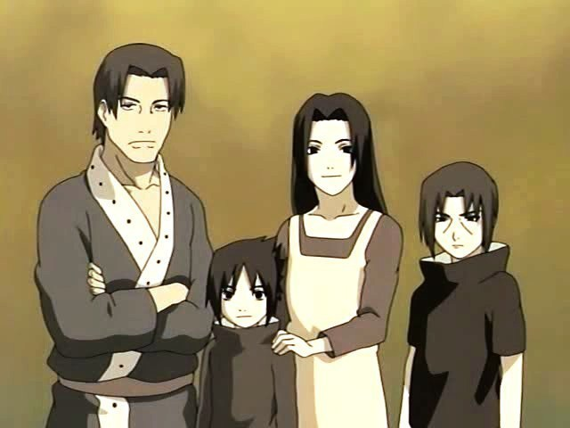
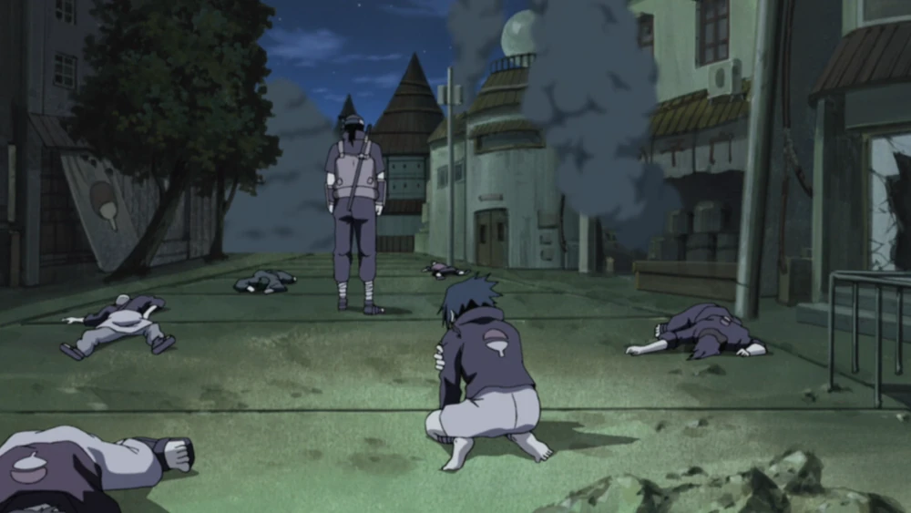

The Uchiha Clan is one of the four noble clans of the Hidden Leaf Village. They are known for their prodigious ability in ninja arts, particularly their mastery of the Sharingan, a unique ocular power. The Uchiha Clan are descendants of Indra Otsutsuki and received the Sharingan from his lineage after he received it from his father, Hagoromo Otsutsuki

The Uchiha are descendants of Indra Ōtsutsuki, the elder son of Hagoromo Ōtsutsuki. Through Indra, the Uchiha inherited Hagoromo's "eyes", granting them powerful spiritual energy and chakra. As part of the so-called "Curse of Hatred" first displayed by Indra, Uchiha are subject to powerful emotions: these emotions typically start as love for a friend or family member that then become overpowering hatred when the object of their love is lost. This loss, whether actually experienced or merely threatened, awakens an Uchiha's Sharingan. It is due to the Sharingan that the Uchiha have received much of their fame and notoriety. The Uchiha have been fighting the Senju clan for centuries, a rivalry that traces back to the days of Indra and his younger brother, Asura. When the Sage of Six Paths was dying, he selected Asura as his successor, believing Asura's desire for peace through love was better than Indra's peace through power. Indra, driven by his Curse of Hatred, fought Asura to claim what he believed was his birthright. The Uchiha and Senju, descendants of Indra and Asura respectively, continued their battle through the centuries, though none still remembered this reason for their conflict.

By the time of the Warring States Period, the Uchiha and Senju had emerged as the strongest shinobi clans in the world. When one of the fledgling countries of the era would hire the Uchiha to fight in their wars, the opposing side would hire the Senju. The constant warfare between their clans only fuelled their hatred, with all Uchiha owing the death of a loved one to a Senju and vice versa. But centuries of conflict began to wear on members of the clans; Madara Uchiha and Hashirama Senju met as children and became friends, bonding over their disapproval of the combat and death that they and their younger brothers were constantly subjected to and dreaming of a time when children wouldn't need to fight. Unable to do anything about the world at their age, Madara turned away from their dreams. Madara and Hashirama continued to face each other in battle over the coming years. Driven by his desire to defeat Hashirama and through competition with his younger brother, Izuna, Madara became the first Uchiha to awaken his Mangekyō Sharingan. With its increased power he took control of the Uchiha. Hashirama, by then leader of the Senju, tried to use their positions to broker peace between them and finally achieve their childhood dreams. Despite growing interest in peace amongst the Uchiha, Madara was unwilling to agree to peace after Izuna was killed by Hashirama's brother, Tobirama. Using Izuna's eyes to acquire "eternal" Mangekyō, Madara challenged the Senju for supremacy one final time. He was defeated, but even then refused Hashirama's offer of peace, insisting that Hashirama kill himself first. When Hashirama agreed to these terms, Madara was moved to accept, withdrawing his request for Hashirama's death.

They unified with Senju and made a pact with the Land of Fire to create a hidden village within its borders, what would become Konohagakure. Other clans settled in Konoha to share their peace and Konoha's model was adopted across the shinobi world, ending the turmoil of the era. When it came time to select Konoha's First Hokage, Konoha's leader, the villagers selected Hashirama. Madara interpreted this as the first step in the Senju's supremacy over the Uchiha and tried to rally his clan to take control of the village. Weary of the fighting, the Uchiha ignored him, prompting him to leave the village. He later returned, challenging Hashirama at what would become the Valley of the End and dying in battle. Despite Madara's actions, Hashirama did not hold anything against the Uchiha, and in fact urged his successor as Hokage, Tobirama, to be careful not to offend them. Tobirama created the Konoha Military Police Force for the Uchiha to lead, believing it would be both the best use of their skills and the best way to focus the clan's energies towards serving Konoha. But the Military Police Force was headquartered in a remote part of the village, and by its nature prevented Uchiha from holding any position of real influence within Konoha's government. As such, some Uchiha came to feel as though they were being deliberately isolated from Konoha, a sentiment that spread amongst the clan over the following decades. In Book of Bright Light, after the Third Shinobi World War, many within the Uchiha clan believed the clan's leader, Fugaku, should become Konoha's Fourth Hokage. But Fugaku was not even considered for the position, and the title of Fourth was passed to yet another disciple of the Senju. Fugaku's supporters were outraged, but Fugaku resisted their calls to protest. A few months later, during the Nine-Tailed Demon Fox's Attack, Fugaku made immediate plans for the Military Police Force to join the village's defence, believing their Sharingan's ability to control the Nine-Tails would be indispensable in protecting the village. Before they could lend aid, however, they received instructions from Konoha's leadership to patrol Konoha's borders instead, a sign that, even in the middle of an attack, the village already suspected an Uchiha was responsible; just as the Sharingan could be used to stop the Nine-Tails, so too could it cause the Nine-Tails' attack in the first place. Fugaku once again complied with the orders without comment. In the aftermath of the attack, the Uchiha clan were relocated to a compound along the village's outskirts on the pretext of it being a necessary step in Konoha's reconstruction. In truth, the Konoha Council was convinced that the Nine-Tails' attack was the first manifestation of the Uchiha's long-simmering dissatisfaction, and needed to put the entire clan together in order to monitor them and prevent any additional attacks. With this, Fugaku and the rest of the clan could no longer sit idly: to be treated with such scepticism despite their years of service to the village convinced them that Madara had been right.
Under the leadership of Fugaku Uchiha, the Uchiha began plotting a coup d'état to overthrow the Third Hokage and his administration. They strategically placed some of their members within the Anbu in order to spy on Konoha, but some of these very spies disagreed with the Uchiha's plans, believing an Uchiha coup would only begin a world war. Shisui Uchiha asked the Third Hokage and Danzō Shimura that he will use Kotoamatsukami to force the Uchiha to stop their plans, as Hiruzen agreed, but Danzō was determined with his own way, so he was prevented from doing so by Danzō Shimura, who thought Shisui's plan would not work, stole the right Mangekyō Sharingan of his. Danzō after that approached Itachi Uchiha, a longtime double agent for Konoha, and gave him an ultimatum: allow the Uchiha to carry out their coup, inevitably ending with the eradication of all Uchiha, or Itachi could wipe out the Uchiha before they had the chance, and in exchange he could spare his younger brother, Sasuke Uchiha. Itachi chose the latter.
Before assassinating his clan, Itachi sought out the help of Tobi, who he was believed to be Madara Uchiha. In a single night, Itachi and Tobi wiped out the entire Uchiha clan, with Itachi taking responsibility of killing his parents. When he was discovered by Sasuke, Itachi pretended to be solely responsible for the attack, concealing Konoha's involvement and the fact that he did everything for Sasuke's safety. Overwhelmed with grief for killing his family, Itachi wanted Sasuke to take revenge against him, and to do that, he began pushing Sasuke to get strong enough to kill him. In the meantime, he left Sasuke under the Third Hokage's care, due to the fact the Third had long desired a peaceful resolution to the Uchiha's grievances.

The Sharingan grants the wielder two broad abilities: the "Eye of Insight" (洞察眼, Dōsatsugan) and the "Eye of Hypnotism" (催眠眼, Saimingan). Although the abilities are not literally restricted to certain eyes, Madara Uchiha noted that the Sharingan can only be used to its full potential when both eyes are together. Even within these two categories, there may exist several distinct though similar abilities: